|
|
Japão – Do Jomon à era Asuka
por Laiz Gabrieli Lapim da
Costa
Rafaela Donario
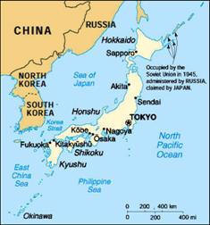
Uma sociedade antiga, com costumes e tradições muito diferentes
das nossas, ocidentais. A cultura, religião, o modo de vida em si do
povo japonês foi muito influenciado pelas culturas continentais,
principalmente da China e Coréia, mas a sua história é única.
Mapa do Japão Atual
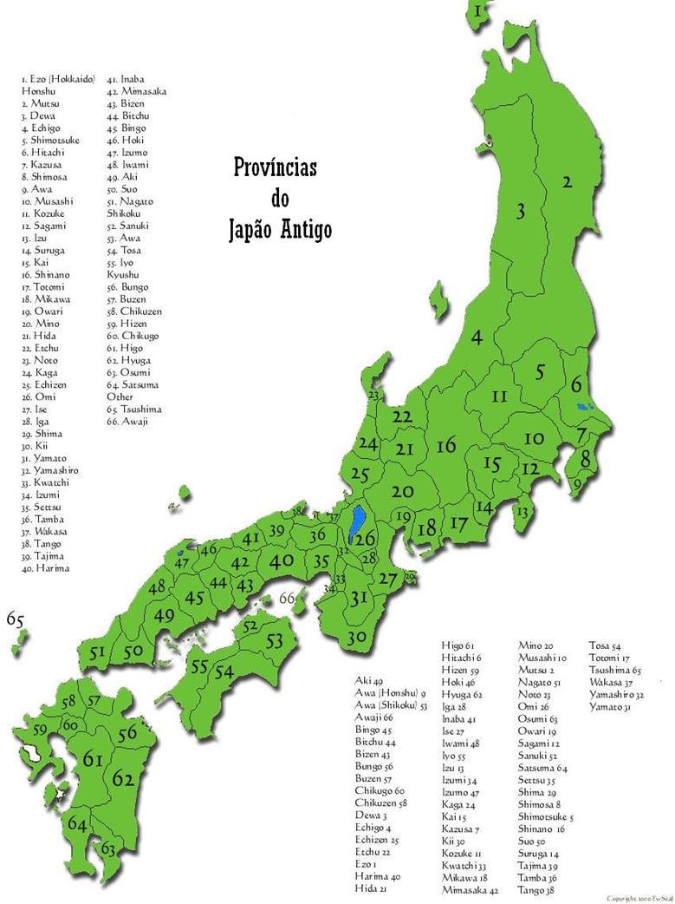
Período Jomon
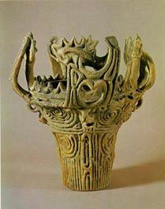O arquipélago japonês
começou a ser habitado há mais de cem mil anos, quando ainda fazia
parte da massa continental asiática. Por volta de 10.000 a.C.,
ocorreu um aumento universal nas temperaturas, e em conseqüência
disso o nível do mar subiu (devido ao degelo dos pólos) e o Japão
foi separado do continente, ficando sua população isolada no
arquipélago. Descobertas arqueológicas revelaram que o antigo povo
que habitava o arquipélago na Idade da Pedra Lascada (período
paleolítico), vivia principalmente da caça e da colheita.
Os
japoneses, que se distribuíam principalmente nas zonas montanhosas
do centro do Japão, aprenderam a fazer cerâmica - uma nítida
evolução dentro da Idade da Pedra
Polida.
Cerâmica do Período Jomon
Através disso é possível determinar algumas coisas, por exemplo,
o domínio do fogo, pois cerâmicas são feitas com barro cozido, e uma
possível agricultura, já que as vasilhas serviam, provavelmente,
para 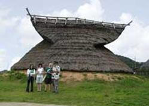armazenar água e
comida. Este período leva o nome de Jomon porque a peculiar cerâmica
característica dele era decorada através da impressão de cordas ou
de ramos no barro ainda mole ou com bambu - e Jomon significa
justamente isso: "decorações codiformes". Durante esse período,
encontra-se pela primeira vez flechas, anzóis, arpões, remos,
agulhas de osso e fragmentos de rede. Muitos desses instrumentos se
relacionam com a água, o que indica que já havia uma navegação
pesqueira no
período.
.
Réplica de casa típica do Período Jomon.
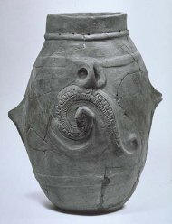Através da cerâmica,
também, imagina-se que tenham seguido uma religião politeísta,
baseada no culto de elementos da natureza e de seus ancestrais. Não
há registros escritos ou vestígios claros de sua língua, e não se
sabe até que ponto os Jomon formaram uma civilização coesa cultural,
social e politicamente, ou se consistia de agrupamentos humanos
descentralizados.
Cerâmica do Período Jomon
Período Yayoi
Cerâmica do Período Yayoi
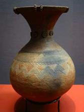O Período Yayoi
é assim chamado porque seus principais vestígios arqueológicos se
encontram na atual região de Yayoicho, em Tókio.
Durou cerca de
600 anos, se iniciando por volta de 300 a.C. e se encerrando por
volta de 300 d.C. Ele corresponde à Idade dos Metais japonesa. Nele
ocorreram algumas revoluções no cotidiano do povo nipônico. As
principais são:
• A introdução dos metais facilita a caça e as lutas entre
os clãs que continuam a formar a estruturação da sociedade, que é
extremamente dividida em regiões de influência de clãs.
• A descoberta da tecelagem permite que os japoneses
abandonem as roupas de peles de animais, substituído-as por roupas
de tecido.
• Outra importante melhora foi o aparecimento de uma olaria
mais avançada. As casas podiam ser construídas com materiais mais
duráveis, melhorando radicalmente a qualidade de vida da população.
No entanto a grande melhoria que o período Yayoi trouxe aos
japoneses foi, sem dúvida, o avanço das técnicas agrícolas,
permitindo o início do cultivo do arroz, que rapidamente se tornou a
principal fonte de alimentação da população.
Neste período,
alguns clãs já começavam a preponderar sobre outros, e as crônicas
chinesas da época citam cinco Reis de Wa (Japão). Em 57 d.C., o Rei
Nu (provavelmente um dos cinco Reis de Wa) recebe um foral de ouro
do Imperador chinês, onde está escrito a seguinte frase: "Ao Rei Nu,
de Wa, vassalo de Han". Han era a dinastia reinante na China naquela
época, e com base neste artefato, muitos historiadores defendem a
tese de que, em seus primórdios, os vários chefes de clãs do Japão
foram tributários do Império Chinês ou dos Reinos Coreanos.
Contudo, o que se sabe é que, em 239 d.C., a Rainha Himiko,
possivelmente do clã Yamato, enviou uma embaixada à Corte Imperial
Chinesa. Pelo que se sabe, está foi a primeira missão diplomática
japonesa da
História.
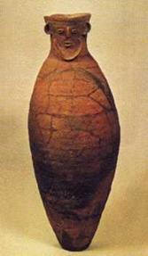
Cerâmica do Período Yayoi
Durante esse período, a população cresceu e sua sociedade se
tornou mais complexa. As habitações mais comuns eram vilarejos
permanentes, com construções de madeira ou pedra. Houve uma grande
acumulação de riqueza através da posse de terras e da estocagem de
grãos, e o surgimento de distintas classes sociais, o que foi
possível devido à introdução da produção irrigada do arroz, vinda da
Coréia, que era similar à existente no sul e centro da China.
Acredita-se que a cultura desse período tenha emergido
primeiramente no norte de Kyushu, seguindo então para a ilha de
Honshu. A tecnologia empregada na produção de vasilhas de cerâmica
durante esse período era muito superior à aplicada no período
anterior. Uma característica marcante foi a produção de sinos
cerimoniais, armas e espelhos feitos de bronze. Em torno de 100 a.C.
, começaram a usar ferramentas agrícolas e armas de ferro.
A
origem dessa cultura tem sido debatida e há algumas teorias
importantes. Uma dessas teorias, proposta na época do período Meiji,
afirma que a cultura Yayoi foi trazida ao Japão por imigrantes da
Coréia. Muitos estudiosos concordam que várias características do
período Yayoi têm origem na cultura coreana, como os socalcos, os
novos tipos de ferramentas de pedra polida, as ferramentas de ferro,
a tecnologia de tecelagem, e os potes de cerâmica.
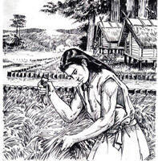
Outra teoria afirma
que a cultura Yayoi foi trazida ao Japão por imigrantes da China. O
surgimento da cultura Yayoi foi rápido, e constituiu um grande
avanço em relação ao período Jomon. O fato mais notável que leva a
essa suposição é o fato de os três maiores símbolos da cultura Yayoi
na Japão (o espelho de bronze, a espada e o selo real) serem os
mesmos usados pela dinastia Qin na China.
Cultivo do arroz, a mais importante característica do Período
Yayoi.
Período Kofun
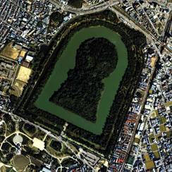Kofun é uma
espécie de continuação do período anterior conhecido como Yayoi (300
a.C. - 300 d.C.), recebendo a denominação de kofun em função da
presença das grandes câmaras funerárias de pedra dessa época -
talvez as mais impressionantes obras de arquitetura do Japão, mesmo
que tenham sido construídas na sua Pré-História.
O Túmulo Imperial Nintoku, do Imperador Nintoku (313 a 399),
localizado nas adjacências do Parque Daisen, em Sakai, redondezas de
Osaka, é o maior do mundo, rodeado por três fossos e abrangendo uma
área de 32 hectares, tem aproximadamente 475 metros de comprimento e
35 metros de altura, formando um conjunto monumental. Supondo que
6.800 mil pessoas tenham trabalhado na construção do túmulo,
mobilizando 2 mil pessoas por dia, a obra levaria quinze anos para
ser concluída. O montante gasto é calculado em 79.600 bilhões de
ienes. Mesmo com a atual tecnologia, seriam necessárias 29 mil
pessoas, dois anos e seis meses, com o custo total de 2 bilhões de
ienes.
Kofun, em japonês, significa túmulo e é justamente essa a
característica marcante do período: o aparecimento dos túmulos dos
mais importantes chefes (ou Reis) de clãs. Essas obras funerárias
construídas numa forma que lembra um buraco de fechadura, tinham
espelhos de bronze e figuras eqüestres como ornamentos na sua parte.
Certamente, os enfeites tinham significados - os espelhos com
moldura de bronze e trabalhados no verso, por exemplo, eram, com
certeza, um símbolo de status na sociedade japonesa, pois eram
encontrados em todos os túmulos de dignitários e inclusive faziam
parte das próprias insígnias reais de muitos clãs. Entretanto, a
mais importante de todas as informações que tais decorações fúnebres
nos dão é o fato dos cavalos terem se tornado, por essa época, o
principal instrumento bélico do arquipélago.
Muitos aspectos
detectados no período Yayoi, tais como a irrigação dos campos de
arroz, a sedentarização da vida agrícola, a crescente utilização do
ferro e do bronze, a tecelagem, a especialização na produção de
metais, a cerâmica e o sal, os túmulos dos chefes com vários objetos
valiosos, as diferenças sociais e a formação de pequenos estados
rivais, intensificaram-se nos séculos seguintes.
Durante a invasão pela Mongólia, após sucessivas lutas entre os
clãs, surge a dinastia Yamato, por volta de 250 d.C. O chefe da
dinastia Yamato recebe o nome de Okimi ou Oaiwô (grande rei) e
posteriormente passou-se a denominá-lo tennô (imperador). Os
indícios levam a crer que a origem dos imperadores japoneses esteja
em Yamato.
Jinmu Tennô foi o primeiro imperador do Japão e
conseguiu integrar as pequenas vilas num único Estado.
Em pleno esplendor, os Yamato mandaram chamar do continente
(China e Coréia) artesãos para ensinar os japoneses. Contudo, dentre
todos os ensinamentos, os mais notáveis e importantes foram o
budismo e a escrita, o kanji.
As sepulturas atingiram a sua maior escala no século V. A chave
para a construção das gigantescas tumbas reside nos migrantes
torai-jin que chegaram ao arquipélago japonês pela península
coreana. Enquanto esta região estava em guerra, os migrantes, que
receberam cargos de elite na corte de Yamato, transmitiram a
tecnologia da construção de tumbas e também de grandes templos, além
de técnicas de forjadura, sericultura, tecelagem e cerâmica entre
outras. Esse movimento migratório data desde a época da mudança da
Era Jomon para Yayoi, quando muitos migrantes chegaram ao Japão.
Atualmente, a teoria predominante da origem do povo japonês é de que
ele surgiu da miscigenação de homens da era Jomon com os
migrantes.
O conhecido túmulo de Nintoku é um dos maiores
monumentos do mundo. Rivaliza com as pirâmides do Egito e só é
ultrapassado pelo túmulo do primeiro imperador da dinastia Qin da
China, com o seu vasto exército, soldados e cavalos, em figuras de
barro de tamanho natural. Nintoku foi um imperador lendário, que
reinou de 313 a 399.
Esta brilhante obra arquitetônica, aliada á
profundos contatos com o exterior e uma grande melhoria na qualidade
de vida da população, marca o fim da Pré-História japonesa e o
início de sua História.
Haniwa
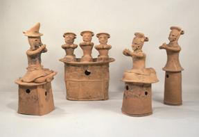
Durante o
período Kofun, desenvolveu-se uma sociedade altamente aristocrática
com governantes militares. A cavalaria usava armadura e transportava
espadas e outras armas, à semelhante do que se passava no nordeste
asiático também tinham métodos militares
avançados.
Estes avanços confirmam-se com a observação das figuras funerárias
(haniwa, que literalmente significa anéis de barro), encontradas em
milhares de kofun por tudo o Japão. Os haniwa mais importantes foram
encontrados no Sul de Honshu (especialmente na região de Kinai
próximo de
Nara)
e também no Norte de Kyushu. As ofertas fúnebres haniwa, podiam ser
de várias formas, cavalos, galinhas, pássaros, peixes, casas, armas,
escudos, guarda-sóis, almofadas e formas humanas, masculinas e
femininas. Outra peça fúnebre, o magatama, tornou-se um dos símbolos
do poder da casa imperial
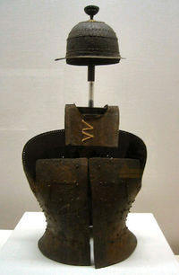Muitos dos vestígios
materiais do período Kofun mal se conseguem distinguir dos
contemporâneos da península coreana, demonstrando que nesta época o
Japão mantinha relações políticas e econômicas próximas com a Ásia
Continental, através da Coréia. De fato, encontraram-se espelhos de
bronze feitos do mesmo molde de ambos os lados dos
estreitos.
Considera-se que o período Kofun acabou em 538, quando o uso dos
elaborados kofun pelos Yamato e outras elites se perdeu, devido às
novas crenças budistas, que punham maior ênfase no caráter efêmero
da vida humana.
Capacete e armadura do século V presente no Museu Nacional de
Tóquio.
Era Asuka
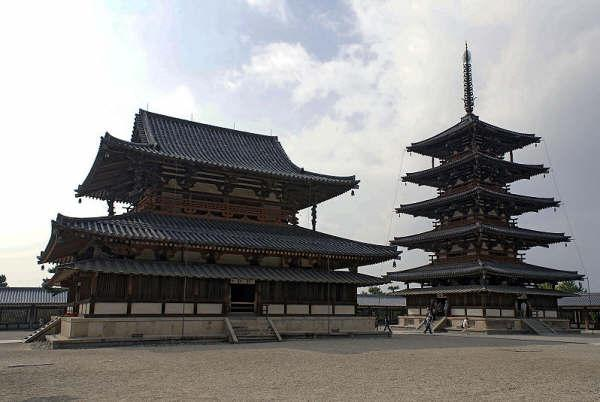A Era Asuka
(593–710) foi um importante período da história japonesa, em
especial para arte e cultura do país.
Ocorre a transição de uma
nação orientada pelo credo xamanista para uma nação
institucionalizada, norteada pelas doutrinas confucionista e
budista, em que grandes clãs começaram a substituir tumbas
monumentais por templos
budistas.
Templo e pagode no complexo de templos de Horyu-ji construído pelo
príncipe Shôtoku.
Na Era Asuka, a corte de Yamato, proveniente da região de mesmo
nome (atual Nara e suas imediações), foi solidificando sua estrutura
política, dominando os demais clãs. A figura central do Ôkimi
(Grande Soberano) liderava a corte de Yamato. Clãs possuíam a função
de ministros. Criaram-se cargos distintos, que passaram a ser
hereditários, transformando-se de nação de caráter
mágico-ritualístico, do tempo da rainha Himiko, para a de estrutura
administrativa que se aproxima da moderna.
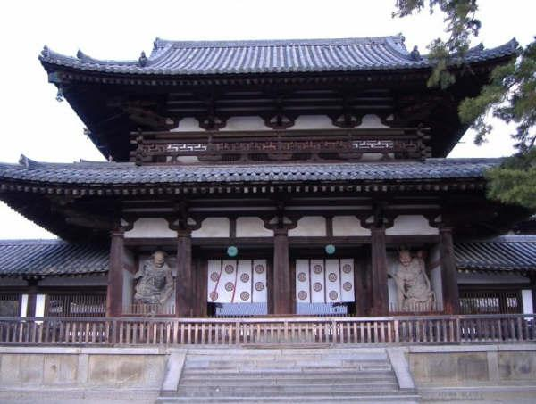Quando a soberana
Suiko (592–628) tomou posse, no fim do século VI, seu sobrinho, o
príncipe Shôtoku (574–622) tornou-se regente e, junto com o poderoso
clã Soga-no-Umako, desenvolveu uma política para consolidar o
sistema governamental do país. Assim, no ano de 603, foi criado,
pelo príncipe Shôtoku, o Kan’i jûnikai (doze graus de hierarquia
burocrática), para a valorização de burocratas. Em 604, ele
instituiu o Kenpô Jûshichi-jô (17 Códigos da Constituição). Com o
objetivo de absorver o novo sistema político e cultural mais
avançado, foram enviadas à China, na época, governada pela dinastia
Sui, cinco missões de estudiosos e monges, o chamado kenzui-shi
(missão a Sui, em japonês “Zui”).
O Chumon.
Com a morte do príncipe Shôtoku, o clã Soga aumentou seu poder.
Insatisfeito com isso, o príncipe Naka-no-Ôoe (mais tarde, imperador
Tenji), em conspiração com Nakatomi no Kamatari (posteriormente
Fujiwara no Kamatari), destruiu o clã Soga (645) e, consultando
aqueles que tinham ido estudar na China (na época, governada pela
dinastia Tang), iniciaram a reforma política para construir uma
nação sólida. Essa reforma ficou conhecida como Reforma de Taika,
pois nesse ano foi instituído o sistema de nengô, nome dado a certo
período de anos e adotado até hoje. O primeiro nengô foi da era
Taika (645–650).
A Reforma de Taika transformou os terrenos de
propriedade particular da família imperial e dos clãs em propriedade
pública. O povo (agricultores) também passou ao controle do poder
central (imperador). Instituiu-se, assim, um novo sistema de
controle nacional, bem como de cobrança de impostos feitos pelo
registro de família (koseki).
Com a morte do imperador Tenji, iniciaram-se as guerras pelo
poder, vencidas pelo imperador Tenmu, que continuou com a reforma
política e o fortalecimento do poder imperial. Sua sucessora, a
imperatriz Jitô, instalou-se na região de Asuka (planície de Nara) e
concluiu a reforma em 701 (primeiro ano da Era Taihô), que chamou de
Taihô Ritsuryô, originando o sistema político norteado por ritsu
(judiciário) e ryô (legislativo), que perdurou por muito tempo.
O sistema político ritsuryô determinou o poder ao imperador,
instituiu oito ministérios, cujos ministros foram escolhidos dos
grandes clãs que despontaram desde a época da Reforma de Taika. A
eles, foram atribuídos direitos, inclusive o título de nobreza, que
passou a ser hereditário, criando, assim, classes sociais distintas.
O Japão foi dividido em 60 koku (circunscrições), e cada koku foi
subdividido em gun (comarcas); os gun, em pequenos ri (vilas). Cada
koku era governado por um kokushi (espécie de governador) enviado
pela capital, que, por sua vez, indicava os clãs para a
administração do gun (gunji) e do ri (richô).
O ritsu estabelecia
cinco penalidades de acordo com a gravidade do crime, sendo a mais
leve a pena de açoite, e a mais pesada a pena de morte. Os crimes
leves eram julgados pelos chefes da comarca (gunshi); e os graves,
pelos ministros, ou mesmo pelo imperador. No norte da ilha de
Kyushu, foi instalado, excepcionalmente, o dazaifu, para a defesa
nacional, assim como para governar toda a ilha.
A cada seis anos,
a corte renovava o koseki (registro de família), atribuindo a todo
indivíduo a partir de 6 anos de idade a sua parcela de arrozal
(kubunden), que era devolvida à corte por ocasião de sua morte para
sua redistribuição. Os agricultores, além de pagar imposto por seu
kubunden, eram recrutados para prestar serviços em obras diversas e
obrigados a prestar serviço militar. Em 710, foi construída uma nova
capital em Nara, a oeste da atual cidade de mesmo nome, dando fim a
Era Asuka.
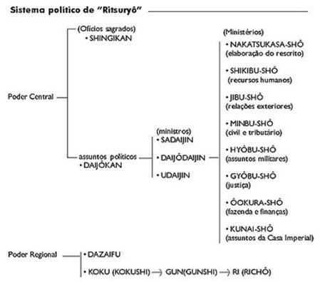
Mitologia
Como outras civilizações antigas o povo japonês também procurou
uma forma mística para retratar a origem do mundo. Todos estes mitos
estão citados no Kojiki e no Nihon Shoki, considerados os livros
mais antigos sobre a história do Japão.
Izanami e Izanagi
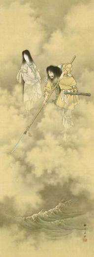A criação do mundo
Os deuses começaram a habitar primeiramente em um lugar chamado
Takamagahara. Quando chegou a sétima geração desses deuses, o deus
chamado Izanagi, ou o Pai do Céu, e a deusa chamada Izanami, ou a
Mãe da Terra, receberam do Senhor do Céu uma lança e, sobre uma
ponte flutuante do céu (Ama no ukihashi), mexeram o mar com essa
lança. Das gotas de sal que caíam e se solidificavam, formou-se uma
ilha chamada de Onokoro. Os dois desceram até a ilha, escolheram a
coluna celeste e construíram um palácio.
Izanami deu uma volta
na coluna celeste e, ao ver Izanagi, falou: “Que homem bonito!”. A
seguir, Izanagi disse: “Que mulher bonita!”. E assim os dois se
tornaram um corpo só e começaram a criar outras ilhas. Porém, quando
olharam para elas, perceberam que não estavam muito boas. Então,
voltaram ao céu para consultar os outros deuses. Eles explicaram aos
dois que não é bom que uma mulher dite as primeiras palavras. Assim,
o casal retornou ao palácio e, dessa vez, foi Izanagi quem dirigiu
as primeiras palavras à Izanami. Unidos dessa forma, começaram a
nascer belas ilhas, uma após a outra. Primeiro nasceu a ilha de
Awaji, depois a de Shikoku, em seguida a de Honshu e as demais,
totalizando oito ilhas. Além delas, Izanami procriou o Deus da
Montanha, do Mar, do Vento, e mais 35 deuses. Ao dar à luz ao seu
último deus, o Deus do Fogo, morreu queimada.
O mundo dos mortos
Não conseguindo esquecer Izanami, Izanagi vai até o mundo dos
mortos para encontrá-la. Izanami fica feliz e deseja muito retornar
à Terra, mas pede a Izanagi para não olhá-la até que o Deus da Morte
lhe dê permissão para retornar. Ansioso demais para revê-la, Izanagi
quebra a promessa e acaba olhando para sua amada. Qual não foi o seu
susto! O corpo dela estava coberto de vermes e com oito tipos de
trovão. Assustado, Izanagi começa a fugir. A mulher tenta
aprisioná-lo enviando a tropa dos deuses do trovão. Na fuga, Izanagi
apanha três pêssegos e atira-os contra os perseguidores, que são
afugentados pelo seu poder mágico. Ele fecha a entrada do Mundo dos
Mortos com uma pesada rocha que demandaria a força de mil homens
para removê-la. Bastante irada, Izanami roga uma praga, dizendo de
trás da rocha: “Para me vingar de você, matarei por dia, mil homens
do seu país!”. Izanagi retruca: “Então farei com que nasçam 1,5 mil
crianças por dia!”.
O nascimento da deusa do Sol, Amaterasu.
Izanagi purifica o seu corpo maculado por ter ido até o mundo dos
mortos, através de outros relacionamentos. Nessa ocasião também
nasceram muitos deuses. Por último, enquanto ele lavava seu rosto,
do olho esquerdo nasceu a Deusa Amaterasu (a Deusa do Sol) a quem
concede o domínio de Takamagahara e, do olho direito nasce Tsukuyomi
no mikoto, a quem concede o domínio da noite, e do nariz nasce
Susano-no-mikoto a quem concede o domínio do mar. Para a Deusa
Amaterasu, ele ofereceu um colar feito de pedras. Com o nascimento
desses deuses, que fornecem energia para o sol, para a lua e para o
mar, dando-lhes vida e movimento, iniciam-se as atividades do
universo.
A Deusa Amaterasu é a figura central e de maior
importância na mitologia japonesa.
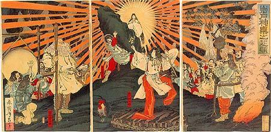Amaterasu, deusa do
sol, saindo da caverna e trazendo novamente luz ao
universo.
Foi ela quem deu origem à família imperial. Ela é cultuada no
Templo Ise, pertencente à família imperial. Até antes da Segunda
Guerra, os japoneses acalentavam o desejo de visitar o local pelo
menos uma vez na vida. Não por ser o templo da família imperial, mas
para rezar e pedir por uma farta colheita à deusa Amaterasu, fonte
da vida, ao Deus da Água Sarutahiko, e à Deusa dos Cereais,
Toyouke.
Linha do Tempo
Era Jomon – 10 000 a.C. á 300 a.C. (Os homens viviam da caça e
pesca, alimentando-se com carnes de veado, porco do mato, atum,
salmão, mariscos e frutas como uvas e castanhas. No início, levavam
uma vida nômade, descobrindo com tempo, o modo de produzir vasos de
barro. Com isso, conseguem conservar e cozer os alimentos. Aos
poucos, vão se agrupando e formando aldeias, fixando-se em
determinados lugares. Nessa época, não havia nem ricos nem
pobres).
Era Yayoi – 300 a.C. á 300 d.C. (O cultivo de arroz e
instrumentos de metal são transmitidos do continente. Com a
intensificação das atividades agrícolas, e aumento da população,
nascem as diferenças sociais, a classe dos ricos e pobres. Pela
primeira vez, o Japão é mencionado numa escritura chinesa).
Era Kofun – 300 d.C. á 645 (Nesta época, foram construídos muitos
túmulos gigantescos em forma de montículos (Kofun), pelos clãs
poderosos. Neles foram enterrados muitos objetos de metal, bonecos
de barro, pedras preciosas, entre outros tesouros. No início do
século VI, o budismo é transmitido ao Japão, sendo introduzida a
escrita junto com sutras).
Era Asuka – 645 á 710 (Forma-se a dinastia Yamato, após
sucessivas lutas entre os clãs. Em meados do século VII, seguindo o
exemplo da dinastia Tang (China), realiza a “Reforma de Taika”,
definindo a organização política, o sistema tributário, etc. O
príncipe Shôtoku institui os “17 códigos da Constituição”, norteados
nas doutrinas de Xintoísmo, Budismo e Confucionismo).
|